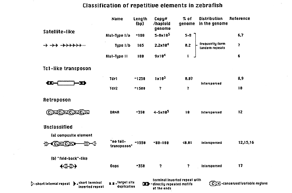

Although zebrafish (Danio rerio) has many advantages over other organisms for studies in developmental genetics (1, 2), certain well-developed methodologies for genetic analysis are lacking. Repetitive sequences in general, and transposable elements in particular, have been found in all metazoan genomes in which they have been sought (3). Transposons have many potential applications in genetic research and are routinely used for insertional mutagenesis, gene mapping, gene tagging and gene transfer in other well-established model systems. These methods, once developed for zebrafish, would greatly facilitate the identification and mapping of genes involved in vertebrate embryogenesis and to investigate the evolutionary processes that have been shaping eukaryotic genomes (4, 5). Accordingly, we decided to characterize repetitive elements from zebrafish.
The first repetitive elements characterized in the zebrafish genome were the AluI repeats (6, 7). These satellite-like, high copy-number elements form long, tandem arrays. They come in two types. Type I is A+T-rich and composes 5-8% of the zebrafish genome whereas Type II is G+C-rich and composes about 1% of the Danio rerio genome. Both types are highly polymorphic, are suitable for identifying individuals within a species, and can be used for mapping genes and other DNA sequences. We attempted to use these sequences to enhance integration of transgenic DNA constructs through homologous recombination, but were unsuccessful (6). Therefore, we investigated two other types of repetitive elements that are mobile in genomes, elements that move directly through DNA copies and elements that transpose through an RNA intermediate, retroposons. Figure 1 shows the various families of repeated sequences that have been found in zebrafish; microsatellite (simple) sequences such as poly(A) and TG/CA sequences are not shown or discussed. We use the terms "transposon" and "retroposon" if the respective element has structural and/or sequence characteristics of known and active transposable elements, regardless of whether the particular sequence has been shown to transpose in the laboratory.
We first examined Tc1-like transposable elements (TCEs) which had been identified and characterized in salmonid fish species and zebrafish (8). TCEs transpose directly via a DNA intermediate, similar to P elements and hobo from Drosophila. In nematodes, Tc1 is widely used for insertional and deletional mutagenesis, transposon-tagging and enhancer trapping. In an attempt to employ such an element in zebrafish for the same purposes, we characterized the zebrafish Tdr1 element (9). Tdr1 was successfully amplified about 1000-fold in the zebrafish, constituting a little less than 0.1% of the haploid genome. However, all of the isolated copies isolated so far (and the search has been intensive) are mutated and do not encode an active transposase. Phylogenetic analysis suggests that the zebrafish genome contains multiple TCE families, e.g., Tdr2 (10). Analysis of several copies of Tdr1 and TCEs isolated from other fish species (10) helped us to reconstruct a consensus sequence of a fish TCE transposase gene which, when expressed as a protein, has many of the known enzymatic activities of the transposases (11). The synthetic Tc1-like element should prove useful as an efficient vector for delivery of transgenes as well as for insertional mutagenesis and enhancer/promoter trapping and gene mapping.
 We have identified a third family of repeated elements in the zebrafish genome, the DANA elements (12). DANA is a retroposon (retroelement) that lacks long terminal repeats and apparently transposes by reverse transcription of an RNA intermediate. DANA is specific for the genus Danio, and was the first retroposon isolated from zebrafish. DANA exhibits all the hallmarks of a tRNA-derived SINE (short interspersed element). In contrast to generic SINE elements, DANA appears to have been formed by insertions of short sequences (Cv blocks in Fig. 1) into a progenitor, tRNA-derived element, and amplified further as a transposable unit. DANA can be particularly suitable as a genetic marker because it has high copy-number (comprising about 10% of the zebrafish genome), has an apparently random distribution in the genome, and has a Mendelian segregation pattern suggesting that the elements are stable in the genome. With DANA-specific PCR-primers (12), the method of SINE-PCR (13) can be used for genome mapping, fingerprinting and YAC cloning. Association of DANA with microsatellite-like repeats permits the combination of SINE-PCR and microsatellite marker mapping (13). "DANA-PCR" can be employed in combination with RAPD markers (14) for genetic and phylogenetic analyses.
Transposable elements are capable of inserting into each other to form composite elements that can be amplified. Evidence for one such event has been found in zebrafish; a DANA-related element apparently inserted into another sequence that subsequently was amplified and inserted into the zebrafish ntl gene (15). The particular composite element that integrated into the ntl gene is amplified about 80- to 100-fold in the genome (16), although the mechanism by which the element spread is not known. Other, unidentified, composite elements surely exist in the zebrafish genome; their structures and modes of amplification remain to be determined. Their importance is demonstrated by the observation that the DANA-composite element is responsible for one of only three spontaneous phenotypic mutants that have been characterized at the sequence level.
A fourth type of repeated element, named Oops (17), has been found in the zebrafish genome. Oops is a short repetitive sequence with the potential to form a cruciform structure. These fold-back-like elements, similar to the Tourist/Stowaway families, have heretofore been found only in fungi and plant genomes (18). Oops was found to accompany other repetitive elements such as DANA, thereby forming complex structures. Oops is found in and around expressed genes such as growth hormone, eIF-4E, and ntl. Like other repeated elements (19), Oops may be able to influence expression of nearby genes.
In conclusion, about 15-20% of the zebrafish genome has been characterized in terms of several types of repeated elements. Understanding the dynamics and evolution of these sequences will allow us to harness them, or derivatives thereof, for further genetic manipulations and analyses in zebrafish.
Acknowledgements
We thank Drs. Andreas Fritz and Marnie Halpern for reading the manuscript and providing unpublished information.
References
1. Nüsslein-Volhard, C. (1994) Of flies and fishes. Science 266: 572-574.
2. Driever, W., D. Stemple, A. Schier, and L. Solnica-Krezel (1994) Zebrafish: genetic tools for studying vertebrate development. Trends Genet. 10: 152-159.
3. John, B. and G.L.C. Miklos (1988) The Eukaryotic Genome in Development and Evolution. Allen and Unwin, London.
4. Kido, Y., M. Aono, T. Yamaki,, K. Matsumoto, S. Murata, M. Saneyoshi, and N. Okada (1990) Shaping and reshaping of salmonid genomes by amplification of tRNA-derived retroposons during eovlution. Proc. Natl. Sci. Acad. Sci. USA 88: 2326-2330.
5. Charlesworth, B., P. Sniegowski and W. Stephan (1994) The evolutionary dynamics of repetitive DNA in eukaryotes. Nature 371: 215-220.
6. He L., Z. Zhu, A.J. Faras, K.S. Guise, P.B. Hackett, A.R. Kapuscinski (1992) Characterization of AluI repeats of zebrafish (Brachydanio rerio). Mol. Marine Biol. Biotech. 1:125-135.
7. Ekker, M., A. Fritz, and M. Westerfield (1992) Identification of two families of staellite-like repetitive DNA sequences fro the zebrafish (Brachydanio rerio). Genomics 13:1169-1173.
8. Radice, A.D., B. Bugaj, D.H. Fitch, and S.W. Emmons (1994) Widespread occurrence of the Tc1 transposon family: Tc1-like transposons from teleost fish. Mol. Gen. Genet. 244:606-612.
9. Izsvák, Zs., Z. Ivics, and P.B. Hackett (1995) Characterization of a Tc1-like transposable element in zebrafish (Danio rerio). Mol. Gen. Genet. 247: 312-322.
10. Ivics, Z., Zs. Izsvák, A. Minter, and P.B. Hackett (1995) Identification and evolution of functional domains of Tc1-like transposable elements in fish. Proc. Natl. Acad. Sci. USA (submitted)
11. Ivics, Z., Zs. Izsvák, and P.B. Hackett. Manuscript in preparation.
12. Izsvák, Zs., Z. Ivics, D. Garcia-Estefania, S.C. Fahrenkrug, and P.B. Hackett (1995) DANA elements: a family of composite, tRNA-derived retroposons associated with mutational activities in zebrafish (Danio rerio). Proc. Natl. Acad. Sci. USA (in press).
13. Kaukinen, J. and S.-L. Varvio (1992) Artiodactyl retroposons: association with microsatellites and use in SINEmorph detection by PCR. Nuc. Acids Res. 20: 2955-2958.
14. Postlethwait, J., S. Johnson, C.N. Midson, W.S. Talbot, M. Gates, E.W. Ballenger, D. Africa, R. Andrews, T. Carl, J.S. Eisen, S. Horne, C.B. Kimmel, M. Hutchinson, M. Johnson, and A. Rodriguez (1994) A genetic map for the zebrafish. Science 264: 699-703.
15. Schulte-Merker, S., F.J.M. van Eeden, M.E. Halpern, C.B. Kimmel, and C. Nüsslein-Volhard (1994) no tail (ntl) is the zebrafish homologue of the mouse T (Brachyury) gene. Development 120: 1009-1015.
16. Fritz, A. personal communication.
17. Izsvák, Zs., Z. Ivics, and P.B. Hackett. Manuscript in preparation.
18. Flavell, A.J., Pearce, S.R. and A. Kumar (1994) Plant transposable elements and the genome. Curr. Op. Gen. Dev. 4:838-844.
19. Britten, R.J. (1994) Evolutionary selection against change in many Alu repeat sequences interspersed through primate genomes. Proc. Natl. Acad. Sci. USA 91: 5992-5996.
For correspondence :
Zoltan Ivics
Department of Genetics and Cell Biology,
University of Minnesota,
1445 Gortner Ave.
St. Paul, MN 55108-1095 USA
(612) 624-4206/ FAX (612) 625-5754
E-mail: zoltan@biosci.cbs.umn.edu